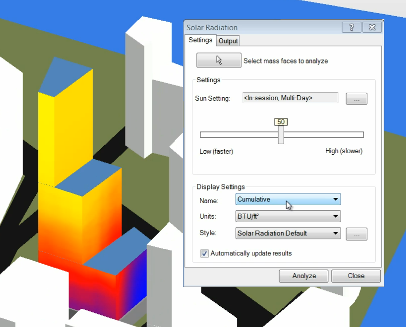

Solar Radiation Technology Preview
The solar radiation technology preview for Revit 2011 is now available. It helps understand and quantify solar radiation on the surfaces of a conceptual building model. This can help make informed design decisions about building shape, orientation, and shading strategies early on when changes are least expensive.
A new version was just released, including many improvements and closer inntegrated in the Revit user interface:

One aspect of interest to application developers is that this plug-in is written entirely using the public Revit API, in addition to the Solar Radiation logic from Ecotect wrapped in a library that is also used from the plug-in code. While there is no direct API access to call the functionality programmatically, it does showcase the new Revit 2011 APIs:
- Dynamic Update API
- Analysis Visualization Framework
- Idling Event
- Sun Path API
We will be discussing these in greater depth anon.